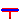
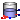
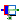

Basic components (pipes, valves)
This package contains components.
Pressure drop is taken from partial model SimpleFriction. Thermodynamic equations are defined in partial models (package BaseClasses).
Extends from Modelica.Icons.Package (Icon for standard packages).
| Name | Description |
|---|---|
|  Pipe | Pipe with optional heat exchange |
| Valve | Simple valve |
|  OpenTank | Model of a tank under ambient pressure |
|  Cylinder | Simple model of a piston in a cylinder |
| OneWayValve | Simple one-way valve |
Pipe with optional heat exchange
Pipe with optional heat exchange.
Thermodynamic equations are defined by BaseClasses.TwoPort. Q_flow is defined by heatPort.Q_flow (useHeatPort=true) or zero (useHeatPort=false).
Note: Setting parameter m (mass of medium within pipe) to zero leads to neglect of temperature transient cv*m*der(T).
Note: Injecting heat into a pipe with zero mass flow causes temperature rise defined by storing heat in medium's mass.
Extends from FluidHeatFlow.BaseClasses.TwoPort (Partial model of two port), FluidHeatFlow.BaseClasses.SimpleFriction (Simple friction model).
| Name | Description |
|---|---|
| medium | Medium in the component |
| m | Mass of medium [kg] |
| T0 | Initial temperature of medium [K] |
| T0fixed | Initial temperature guess value or fixed |
| tapT | Defines temperature of heatPort between inlet and outlet temperature |
| useHeatPort | = true, if HeatPort is enabled |
| h_g | Geodetic height (height difference from flowPort_a to flowPort_b) [m] |
| g | Gravitation [m/s2] |
| Initialization | |
| V_flow | Volume flow a->b [m3/s] |
| Simple friction | |
| V_flowLaminar | Laminar volume flow [m3/s] |
| dpLaminar | Laminar pressure drop [Pa] |
| V_flowNominal | Nominal volume flow [m3/s] |
| dpNominal | Nominal pressure drop [Pa] |
| frictionLoss | Part of friction losses fed to medium |
| Name | Description |
|---|---|
| flowPort_a | |
| flowPort_b | |
| heatPort |
Simple valve
Simple controlled valve.
Standard characteristic Kv=f (y) is given at standard conditions (dp0, rho0),
Kv/Kv1 = Kv0/Kv1 + (1-Kv0/Kv1) * y/Y1 Kv/Kv1 = Kv0/Kv1 * exp[log(Kv1/Kv0) * y/Y1]where:
Kv0 ... min. flow @ y = 0Y1 .... max. valve openingKv1 ... max. flow @ y = Y1Flow resistance under real conditions is calculated by
V_flow**2 * rho / dp = Kv(y)**2 * rho0 / dp0
Extends from FluidHeatFlow.BaseClasses.TwoPort (Partial model of two port).
| Name | Description |
|---|---|
| medium | Medium in the component |
| T0 | Initial temperature of medium [K] |
| T0fixed | Initial temperature guess value or fixed |
| tapT | Defines temperature of heatPort between inlet and outlet temperature |
| frictionLoss | Part of friction losses fed to medium |
| Initialization | |
| m | Mass of medium [kg] |
| V_flow | Volume flow a->b [m3/s] |
| Standard characteristic | |
| LinearCharacteristic | Type of characteristic |
| y1 | Max. valve opening |
| Kv1 | Max. flow @ y = y1 [m3/s] |
| kv0 | Leakage flow / max.flow @ y = 0 |
| dp0 | Standard pressure drop [Pa] |
| rho0 | Standard medium's density [kg/m3] |
| Name | Description |
|---|---|
| flowPort_a | |
| flowPort_b | |
| y |
Model of a tank under ambient pressure
This is a simple model of an open tank with volume A*h. The level and the temperature of the medium are measured and provided as output.
Note: If the level of the medium reaches 0 (minimum) or h (maximum), an assertion is triggered.
Note: The flowPort is assumed to be at the bottom. Therefore the pressure at the flowPort is ambient pressure + level*rho*g.
It is assumed that the medium in the tank has the same temperature over the whole volume, i.e. mixed thoroughly.
Via the optional heatPort the medium in the tank can be cooled or heated.
Extends from FluidHeatFlow.BaseClasses.SinglePortBottom (Partial model of a single port at the bottom).
| Name | Description |
|---|---|
| medium | Medium |
| T0 | Initial temperature of medium [K] |
| T0fixed | Initial temperature guess value or fixed |
| ATank | Cross section of tank [m2] |
| hTank | Height of tank [m] |
| pAmbient | Ambient pressure [Pa] |
| g | Gravitation [m/s2] |
| useHeatPort | = true, if HeatPort is enabled |
| Name | Description |
|---|---|
| flowPort | |
| heatPort | Optional port for cooling or heating the medium in the tank |
| level | Level of medium in tank [m] |
| TTank | Temperature of medium in tank [K] |
Simple model of a piston in a cylinder
This is a simple model of a piston in a cylinder:
The translational flange is connected to the piston, the cylinder has a flowPort at the bottom.
The position of the piston within the cylinder goes from 0 at the bottom to L (length of the cylinder) at the top of the cylinder. If the piston leaves the cylinder, an assertion is triggered.
The piston is considered without mass.
Note: Take care of the initial conditions. The position of the piston (relative to the support) should be in the range (0, L). The position of the flange (as well as of the support, if useSupport=true) is influenced by connected components.
Extends from FluidHeatFlow.BaseClasses.SinglePortLeft (Partial model of a single port at the left), Modelica.Mechanics.Translational.Interfaces.PartialElementaryOneFlangeAndSupport2 (Partial model for a component with one translational 1-dim. shaft flange and a support used for textual modeling, i.e., for elementary models).
| Name | Description |
|---|---|
| medium | Medium |
| T0 | Initial temperature of medium [K] |
| T0fixed | Initial temperature guess value or fixed |
| A | Cross section of cylinder/piston [m2] |
| L | Length of cylinder [m] |
| useSupport | = true, if support flange enabled, otherwise implicitly grounded |
| Initialization | |
| s | Distance between flange and support (= flange.s - support.s) [m] |
| Name | Description |
|---|---|
| flowPort | |
| flange | Flange of component |
| support | Support/housing of component |
Simple one-way valve
Simple one-way valve, comparable to the electrical ideal diode model.
Extends from FluidHeatFlow.BaseClasses.TwoPort (Partial model of two port).
| Name | Description |
|---|---|
| medium | Medium in the component |
| T0 | Initial temperature of medium [K] |
| T0fixed | Initial temperature guess value or fixed |
| tapT | Defines temperature of heatPort between inlet and outlet temperature |
| V_flowNominal | Nominal volume flow rate (forward) [m3/s] |
| dpForward | Pressure drop at nominal flow (forward) [Pa] |
| dpNominal | Nominal pressure (backward) [Pa] |
| V_flowBackward | Leakage volume flow rate (backward) [m3/s] |
| frictionLoss | Part of friction losses fed to medium |
| Initialization | |
| m | Mass of medium [kg] |
| V_flow | Volume flow a->b [m3/s] |
| Name | Description |
|---|---|
| flowPort_a | |
| flowPort_b |